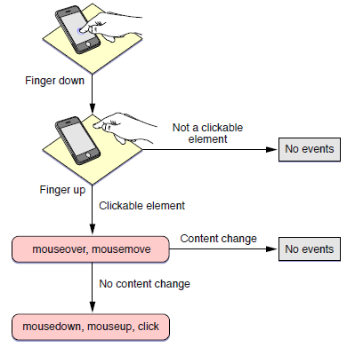

水果设备中的Gesture，广义的说包括手指点击（click），轻拂（flick），双击（double-click），两只手指的分开、闭合（scale）、转动（rotate）等一切手指能在屏幕上做的事情。iOS上设计了了一系列手势来模拟和扩展鼠标操作，比如手指放下后迅速提起会触发click事件，手指向上滑动，停止，会触发body的onscroll事件等等。但是，狭义的Gesture事件，也就是能够addEventListener的GestureEvent对象，却并不是一个非常强大的存在，它只在有两根或多根手指放在屏幕上的时候触发，并且只包含手指分开比例（scale）和手指转动角度（rotation）信息。对于其他各种常用的手势，我们必须利用别的事件来处理。
下面从单根手指的事件开始说起。。。
我们先来考虑一个最简单的手势，手指放下后迅速提起，这个手势做出来后会发生什么？大家当然会想到click，其实在click发生以前，还有很多事情发生，请看下图：
这里先解释一下什么是clickable element，就是一个绑定了click, mousedown, mouseup, mousemove事件 的任何html element（注意，没有绑定事件处理的element不算clickable element）。从这张图可以看出，手 指提起的一刹那，首先触发的并不是click事件，而是mouseover和mousemove。然后，系统会判断接收到事 件的element的内容是否被改变，如果内容被改变，接下来的事件都不会触发，如果没有改变，会按照 mousedown，mouseup，click的顺序触发事件。什么？你问mouseout在哪？这个事件的处理，比较尴尬， 上面说的一系列事件都完了以后，如果你再点击一个clickable element，就会触发上一个clickable element的 mouseout事件了。。。比较纠结，建议不要在多触版网页上使用mouseout。
那么，如果手指放下后不提起又会发生什么呢？什么都不会发生，没有任何事件会被触发。但是，如果对象 是一个img并且有alt属性的话，这个动作将会显示img的alt字符串。如果是一个link的话，这个动作会显示“在 新窗口打开连接”选项，但是，不会有任何用户定义事件触发。
最后一种关于单根手指的事件，是放下后滑动手指。注意，在滑动的过程当中，不会触发除touchmove以外 的任何事件（请不要试图在这时处理mousemove）。手指在滑动的时候，整个page应该会跟着移动，除非你 preventDefault了body的touchmove。当手指停下来后，page的onscroll将会触发。除此之外，没有什么我 们熟悉的事情会发生。